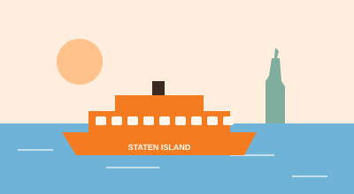

Blog
Practical Advice for Local Business Websites
Plain-English guides to getting found online and turning visitors into customers.
7 Things Every Local Business Website Needs
The short list that separates sites that get calls from sites that don't.
Why Your Google Maps Profile Might Matter More Than Your Website
Where local customers actually find you, and how to show up.
 vs
Comparison
vs
Comparison
Web Design Wife vs. Hiring a Web Design Agency
Agencies are great for some projects. Here's when to hire one, and when a managed site is the smarter move.
vs
Comparison
Web Design Wife vs. Wix: An Honest Comparison
Wix is a flexible do-it-yourself builder. Here's when it's the right call, and when a managed site makes more sense.
vs
Comparison
Web Design Wife vs. Squarespace: An Honest Comparison
Squarespace makes beautiful do-it-yourself sites. Here's an honest look at when it's the right choice.
vs
Comparison
Web Design Wife vs. WordPress: An Honest Comparison
WordPress can do almost anything, but it needs looking after. Here's who it's right for.
vs
Comparison
Web Design Wife vs. Webflow: An Honest Comparison
Webflow gives designers amazing control. Here's whether it makes sense for a local business owner.
vs
Comparison
Web Design Wife vs. Shopify: An Honest Comparison
If you sell products online, Shopify is probably the right answer. Here's the honest breakdown.
vs
Comparison
Web Design Wife vs. GoDaddy Website Builder: An Honest Comparison
GoDaddy's builder gets you online fast. Here's what you trade for that speed.
vs
Comparison
Web Design Wife vs. Square Online: An Honest Comparison
If you already use Square, its website tool can be handy. Here's when it's enough.
vs
Comparison
Web Design Wife vs. Framer: An Honest Comparison
Framer makes striking, animated sites. Here's whether that's what a local business needs.
vs
Comparison
Web Design Wife vs. Carrd: An Honest Comparison
Carrd makes simple one-page sites for very little money. Here's how it compares.
vs
Comparison
Web Design Wife vs. Google Sites: An Honest Comparison
Google Sites is free and simple. Here's why it's rarely the best choice for a business website.
vs
Comparison
Web Design Wife vs. Hostinger Website Builder: An Honest Comparison
Hostinger's builder is budget-friendly with AI help. Here's the honest comparison.
Websites for Businesses in Manhattan
Dense blocks, busy customers and lots of competition. Here's how I build websites for Manhattan businesses.
Websites for Businesses in Brooklyn
Brooklyn customers are loyal to their neighborhood. Here's how I build websites that feel local.
Websites for Businesses in Queens
Queens is one of the most diverse places anywhere. Here's how I build websites that welcome every customer.
Websites for Businesses in the Bronx
Family-run businesses, strong neighborhoods and loyal customers. Here's how I build websites for the Bronx.

Borough guideWebsites for Businesses in Staten Island
More driving, more home services and a lot of word of mouth. Here's how I build websites for Staten Island.
DIY, Agency or Managed: Which Website Is Right for You?
An honest look at the cost, time and trade-offs of each option.
How to Get More Google Reviews (Without Being Pushy)
Simple habits that turn happy customers into reviews.
Building Your Own Website? Here's How to Do It Right
Doing it yourself is a perfectly good choice. Here's a practical plan to get it right the first time.